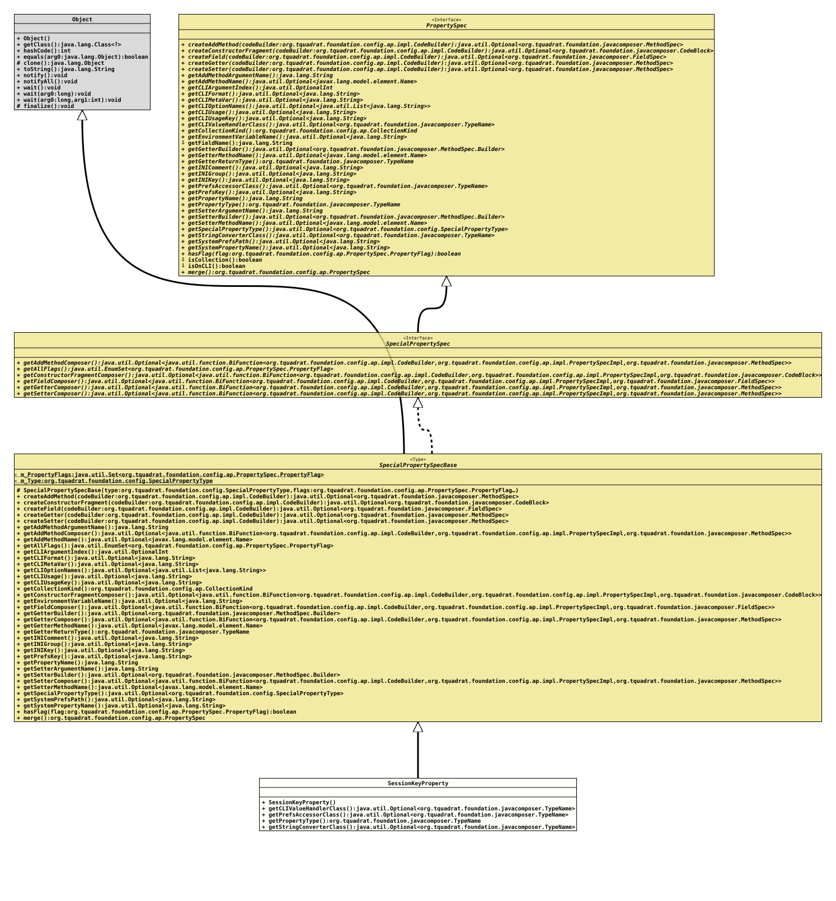

Class SessionKeyProperty
java.lang.Object
org.tquadrat.foundation.config.ap.impl.specialprops.SpecialPropertySpecBase
org.tquadrat.foundation.config.ap.impl.specialprops.SessionKeyProperty
- All Implemented Interfaces:
SpecialPropertySpec, PropertySpec
@ClassVersion(sourceVersion="$Id: SessionKeyProperty.java 943 2021-12-21 01:34:32Z tquadrat $")
@API(status=STABLE,
since="0.1.0")
public final class SessionKeyProperty
extends SpecialPropertySpecBase
The implementation of
SpecialPropertySpecBase
for
SpecialPropertyType.CONFIG_PROPERTY_SESSION.- Author:
- Thomas Thrien (thomas.thrien@tquadrat.org)
- Version:
- $Id: SessionKeyProperty.java 943 2021-12-21 01:34:32Z tquadrat $
- Since:
- 0.1.0
- UML Diagram
-

UML Diagram for "org.tquadrat.foundation.config.ap.impl.specialprops.SessionKeyProperty"
{kind=link}
-
Nested Class Summary
Nested classes/interfaces inherited from interface PropertySpec
PropertySpec.PropertyFlag -
Constructor Summary
Constructors -
Method Summary
Modifier and TypeMethodDescriptionReturns the CLI value handler class for this property.Returns thePreferencesaccessor class.final TypeNameReturns the property type.Returns the class that implements the String converter for the type of this property.Methods inherited from class SpecialPropertySpecBase
createAddMethod, createConstructorFragment, createField, createGetter, createSetter, getAddMethodArgumentName, getAddMethodComposer, getAddMethodName, getAllFlags, getCLIArgumentIndex, getCLIFormat, getCLIMetaVar, getCLIOptionNames, getCLIUsage, getCLIUsageKey, getCollectionKind, getConstructorFragmentComposer, getEnvironmentDefaultValue, getEnvironmentVariableName, getFieldComposer, getGetterBuilder, getGetterComposer, getGetterMethodName, getGetterReturnType, getINIComment, getINIGroup, getINIKey, getPrefsKey, getPropertyName, getSetterArgumentName, getSetterBuilder, getSetterComposer, getSetterMethodName, getSpecialPropertyType, getSystemPrefsPath, getSystemPropertyName, hasFlag, isEnum, mergeMethods inherited from class Object
clone, equals, finalize, getClass, hashCode, notify, notifyAll, toString, wait, wait, waitMethods inherited from interface PropertySpec
getElementType, getFieldName, isCollection, isOnCLI
-
Constructor Details
-
SessionKeyProperty
public SessionKeyProperty()Creates a new instance ofSessionKeyProperty.
-
-
Method Details
-
getCLIValueHandlerClass
Returns the CLI value handler class for this property. -
getPrefsAccessorClass
Returns the
Preferencesaccessor class.This is used when this property is linked to a preference, but also to initialise it from a SYSTEM preference.
-
getPropertyType
-
getStringConverterClass
Returns the class that implements the String converter for the type of this property.- Returns:
- An instance of
Optionalthat holds the implementation class forStringConverter.
-